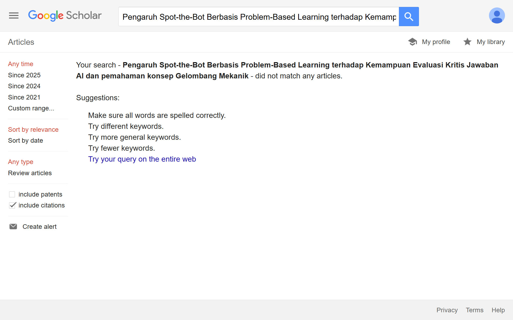

Metopen Kuantitatif - Usulan Novelty Artikel Pertemuan 13
fqs November 24, 2025 #PFIS258005 #kuliahNama: Firman Qashdus Sabil
NIM: 250321830676
Geser untuk melihat kolom yang di kanan
| Judul & _Link_ Review | Tujuan | Metode | Variabel | Instrumen/ Data Penelitian | Hasil | Gap |
|---|---|---|---|---|---|---|
| Post-Hoc Tests in One-Way ANOVA: The Case for Normal Distribution Atika Nur Fadhilah | Membandingkan tingkat kesalahan Tipe-I (α) dari 10 uji post-hoc pada satu-way ANOVA di empat kondisi (homoscedastic/heteroscedastic × balanced/unbalanced) dan berbagai ukuran sampel. | Metode: Monte-Carlo simulation: 28 dataset, tiap kondisi 10.000 resamples. Dimanipulasi: varians antar-grup dan keseimbangan ukuran grup; ukuran sampel N = {30,90,150,300,750,1500,3000}. Analisis: one-way ANOVA diikuti 10 post-hoc tests (7 untuk equal variances, 3 untuk unequal variances). Pengolahan di R / SPSS. |
|
R (Rcmdr), IBM SPSS untuk perhitungan ANOVA dan uji-uji post-hoc. Implementasi algoritma simulasi Monte-Carlo. | Tidak ada satu uji post-hoc tunggal yang konsisten paling akurat di semua kondisi; beberapa uji (Bonferroni, Šidák, Tamhane’s T2, Dunnett’s T3, Games-Howell dll.) tampil lebih baik pada kondisi tertentu. Variasi besar tergantung kondisi (terutama heteroscedastic/unbalanced). Rekomendasi: pilih post-hoc sesuai kondisi data, bukan asumsi tunggal. |
|
| Working together or alone, near, or far: Social connections and communities of practice in in-person and remote physics laboratories Aurelia Apriliyani | Menelaah pembentukan koneksi sosial dan komunitas praktik di laboratorium fisika tatap muka vs. remote selama pandemi, dan hubungan koneksi sosial dengan physics laboratory self-efficacy. | Quasi-experimental, nonequivalent group design; survei kuantitatif pada mahasiswa laboratorium pengantar (N ≈ 697). Analisis: factor analysis (untuk subskala), ANOVA untuk perbandingan mean, korelasi (termasuk partial correlations). |
|
Survei yang dirancang penulis: item untuk student-student social learning perspectives, student-instructor perspectives, dan self-efficacy. Faktor diekstraksi via factor analysis; data demografis dan konteks lab dikumpulkan. |
|
|
| How do physics students evaluate artificial intelligence responses on comprehension questions? A study on the perceived scientific accuracy and linguistic quality of ChatGPT Firman Qashdus Sabil | Menilai bagaimana mahasiswa fisika menilai kualitas linguistik dan akurasi ilmiah jawaban ChatGPT pada tiga soal mekanika berjenjang. Juga menguji pengaruh self-estimated expertise terhadap penilaian. | Survei eksperimental: N = 102 mahasiswa tahun 1–2. Setiap pertanyaan (3 tingkat kesulitan) disajikan 4 jawaban (3 dari ChatGPT, 1 sample solution yang disamarkan sebagai ChatGPT). Responden menilai kualitas linguistik dan akurasi ilmiah, serta self-rated expected performance. Analisis statistik pada perbedaan rating dan pengaruh self-assessed knowledge. Instrumen online (LimeSurvey). |
|
Kuesioner online (LimeSurvey) termasuk: demografi, sikap terhadap AI, tiga set soal + empat alternatif jawaban, skala Likert untuk penilaian. Lampiran instrumen tersedia dalam Appendix. |
|
|
| The Impact of Problem‑Based Learning on Students’ Achievement in Mechanical Waves in Secondary Schools Fikrul | Menguji pengaruh Problem-Based Learning (PBL) terhadap prestasi siswa pada topik gelombang mekanik di sekolah menengah atas (Southwestern Uganda). | Kuasi-eksperimental menggunakan Solomon four-group design (mengatasi sensitization dari pre-test). Sampel: 419 siswa dari 19 sekolah; randomisasi sekolah ke experimental (PBL) vs control (Traditional Instructional Methods, TIM). Durasi intervensi ≈ 3.5 bulan. Analisis: repeated-measures ANOVA, ANCOVA, post-hoc Bonferroni, Wilks’ lambda untuk multivariate. |
|
Mechanical Wave Conceptual Survey (MWCS) (Tongchai et al., 2008) — dipakai sebagai pre/post test; reliabilitas Cronbach’s α ≈ 0.707 pada pilot. Observasi kelas dan pelatihan guru untuk PBL. | PBL meningkatkan pencapaian siswa pada gelombang dibanding TIM (efek besar, learning gains tinggi). Hasil signifikan pada analisis post-test; faktor-faktor seperti gender, usia, subject combination tidak menunjukkan pengaruh signifikan. |
|
| Permutation Tests Are a Useful Alternative Approach for Statistical Hypothesis Testing in Small Sample Sizes Mellly Yuni Anjani | Mengevaluasi kinerja permutation tests sebagai alternatif non-parametrik untuk uji tradisional (t-test, ANOVA, log-rank, dsb.) pada kasus small sample (preclinical animal studies), fokus pada Type-I error, power, dan runtime. | Aplikasi permutation test pada empat masalah analisis umum (two-sample, k-sample, contingency table, time-to-event) menggunakan real-world datasets + simulasi power dari distribusi normal, log-normal, eksponensial; perangkat: R (coin package), MCMC approximations bila perlu; juga simulasi power untuk n = 5 dan n = 10 per grup. |
|
R (coin package) untuk permutation tests; R default packages untuk metode klasik; simulasi Monte-Carlo. | Permutation tests umumnya menghasilkan p-value dan power yang sebanding dengan uji klasik; unggul terutama ketika asumsi distribusi dilanggar; runtime praktis (cepat) pada kasus yang diuji. Untuk time-to-event, log-rank masih menunjukkan advantage. Rekomendasi hati-hati: permutation tests berguna, terutama untuk small samples dan bila asumsi distribusi tidak dapat dicek. |
|
Berdasarkan lima artikel di atas, terdapat tema menarik berkaitan dengan: metode pembelajaran (PBL), interaksi sosial/komunitas praktik (remote vs in-person), kemampuan siswa mengevaluasi respons AI, serta isu metodologis statistik (pemilihan post-hoc / penggunaan permutation tests (lihat Artikel 3 untuk instrumen penilaian jawaban AI; Artikel 4 untuk desain pengajaran PBL; Artikel 2 untuk pentingnya komunitas sosial; Artikel 1 dan 5 untuk pedoman analisis statistik).
Usulan Judul:
Pengaruh Spot-the-Bot Berbasis Problem-Based Learning terhadap Kemampuan Evaluasi Kritis Jawaban AI dan pemahaman konsep Gelombang Mekanik
The Effect of Spot-the-Bot Based on Problem-Based Learning on the Critical Evaluation Ability of AI Answers and Conceptual Understanding of the Mechanical Wave
Metode
Quasi-eksperimental dengan Solomon four-group design (menghindari efek sensitization pre-test seperti pada Kanyesigye). Alokasi kelas ke 4 grup:
- G1: Intervensi (PBL + Spot-the-Bot) — pre & post
- G2: Control (TIM) — pre & post
- G3: Intervensi (PBL + Spot-the-Bot) — post only
- G4: Control (TIM) — post only.
sampel
- Subjek: siswa atau mahasiswa awal.
- Sampling: cluster sampling berdasarkan kelas/sekolah; randomisasi pada cluster.
- Ukuran sampel: (setelah menghitung power) jika grup kecil, dapat memakai permutation tests untuk uji hipotesis.
Treatment
- PBL
- Spot-the-Bot: setiap kelompok diberi aktivitas terstruktur tiap minggu: (a) diberikan beberapa jawaban (ChatGPT + sample solutions yang dimasking) untuk soal konseptual gelombang; (b) siswa bekerja kelompok menganalisis, menandai kesalahan, menulis argumen perbaikan; (c) refleksi kelas dan feed-forward dari guru. Instruksi dan rubrik penilaian dapat diadaptasi dari instrumen Artikel 3 (rating scientific accuracy & linguistic quality).
Variabel yang diukur
- Pemahaman konsep gelombang mekanik dengan skor MWCS (Mechanical Wave Conceptual Survey) pre & post.
- Kemampuan evaluasi kritis jawaban AI yang diukur dengan skala/rubrik
- Kontrol: self-estimated content knowledge, demografi (gender, usia, subject combination).
